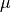

proffilo.distribution.NormalDistribution¶
-
class
proffilo.distribution.NormalDistribution(mean=300, sigma=80, x=None, **kwargs)¶ Normally distributed grain-size distribution.
A basic normally distributed grain-size distribution with defined mean and standard deviation. While this distribution is not really realistic, it is sometimes helpful. It can be readily instantiated with just two parameters, and so can be helpful in debugging and testing.
Note
Values less than zero are truncated, but the distribution is not renormalized. That is, the distributions are not truly truncated in [0,:math:inf).
-
__init__(mean=300, sigma=80, x=None, **kwargs)¶
Methods
__init__([mean, sigma, x])d(x[, units])show_distribution([cumulative, log_x, …])Show the distribution.
Attributes
Distribution bins [ m].
Cumulative distribution.
Properties created with the
@propertydecorator should be documented in the property’s getter method.Percentage in each bin [%].
Units of bins.
-
property
bin¶ Distribution bins [ m].
Grain-size bins characterizing the grain-size distribution.
- Type
ndarray
-
property
cumulative_dist¶ Cumulative distribution.
Cumulative percentage of grain-size distribution along bins [%].
- Type
ndarray
-
property
data¶ Properties created with the
@propertydecorator should be documented in the property’s getter method.
-
property
dist¶ Percentage in each bin [%].
Percentage of grain-size distribution in each bin.
- Type
ndarray
-
show_distribution(cumulative=False, log_x=False, block=False, save_str=None, return_ax=False, **kwargs)¶ Show the distribution.
- Parameters
cumulative (bool, optional) – Whether to to plot as cumulative distributions or probability distributions. Default is
True(cumulative).log_x (bool, optional) – Whether to plot the x-axis in logarithmic space. Deafault is
False(linear).block (bool, optional) – Whether to pause script execution by showing the plot. I.e., the
blockargument in matplotlib’splt.show().save_str (str, optional) – String to save the output file.
return_ax (bool, optional) – Whether to return the axis object; default is
False. IfTrue, block and save_str are ignored and the axis is returned before saving or showing.**kwargs (optional) – Any arbitrary
matplotlib.pyplot.plot()keyword arguments for the plot specification. Note that these specs are passed to all lines.
- Returns
ax – The axis object. Only provided if parameter
return_ax=True.- Return type
matplotlib.pyplot.axes
-
property
units¶ Units of bins.
Units of grain size [ m]
- Type
str
-